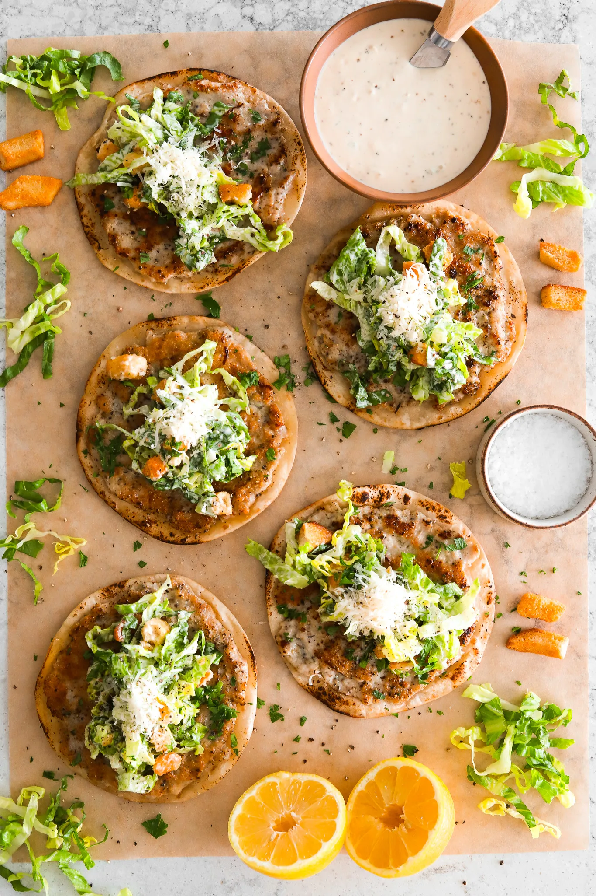
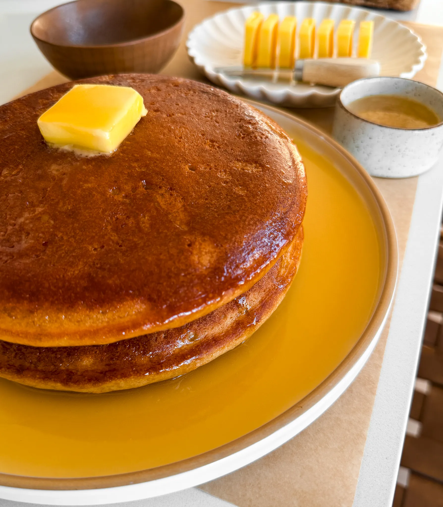

The Cookbook
Chicken Ceasar Smash Tacos

Total Time:
30 Minutes
Makes:
7 Tacos
Author:
Moribyan
Ingredients
The Chicken
-
1 Pound ground chicken
-
1 teaspoon Italian seasoning
-
1 teaspoon lemon pepper
-
1 teaspoon garlic powder
-
1 teaspoon onion powder
-
¾ teaspoon salt
-
½ teaspoon black pepper
-
Ceasar Dressing
-
1 cup mayonnaise
-
¼ cup buttermilk
-
1 tablespoon fresh lemon juice
-
½ tablespoon Worcestershire sauce
-
2 teaspoons minced garlic
-
2 teaspoons yellow mustard
-
1 teaspoon anchovy paste
-
1 teaspoon dried parsley
-
½ teaspoon black pepper
-
½ cup freshly grated Parmesan cheese
Assembly
- 7 small flour tortillas (taco size)
- 1 tablespoon neutral oil or unsalted butter
- 1 head romaine lettuce, finely shredded
- ½ cup croutons, roughly crushed
- extra parmesan cheese, for topping
- chopped parsley, for garnish
- extra caesar dressing, to drizzle on top
Instructions
-
Make the dressing:
In a bowl, whisk together mayonnaise, buttermilk,
lemon juice, Worcestershire sauce, minced garlic, yellow
mustard, anchovy paste, dried parsley, and black pepper until
smooth and creamy. Stir in the grated Parmesan cheese, then
cover and refrigerate while you prepare the rest.
-
Prepare the chicken:
In another bowl, combine the ground chicken with Italian
seasoning, lemon pepper, garlic powder, onion powder, salt,
and black pepper. Mix until just combined.
-
To each tortilla, add about ¼ cup of the chicken mixture and
press it out to evenly cover the entire surface. Add more if
you prefer a thicker patty.
Tip:
If the chicken sticks while pressing, lightly coat your fingers
or spatula with a little oil to help spread it smoothly.
-
Cook the chicken:
Heat a skillet or pan over medium-high heat with a small
splash of oil or dab of butter.
-
Place the tacos meat-side down in the pan, working in batches
if needed. Cook for 2 to 3 minutes until the meat develops a
golden crust. Flip the tacos, lower the heat, and let the
tortilla crisp up for another 2 to 3 minutes until the chicken
is fully cooked. Remove and repeat with the remaining tacos.
-
Assemble the tacos:
In a bowl, toss the shredded romaine with some of the Caesar
dressing—use as much or as little dressing as you like. Add
the crushed croutons and toss again.
-
Top each taco with the dressed salad mix, extra Parmesan
cheese, a sprinkle of chopped parsley, and another drizzle of
Caesar dressing on top if you want it extra saucy. Enjoy warm!
Fluffy Diner Pancakes

Total Time:
1 Hour 30 Minutes
Makes:
3 Pancakes
Author:
Moribyan
Ingredients
Batter-Proof:
- ¾ cup whole milk
- 1 ¼ cup buttermilk
- 1 cup all-purpose flour
- 2 teaspoons instant yeast
- 3 tablespoons granulated sugar
Batter-Dry:
- 1 cup all-purpose flour
- 1 teaspoon baking soda
- ½ teaspoon salt
Batter-Wet
- 2 large eggs
- ¼ cup vegetable oil
- 2 teaspoons vanilla extract
Honey Butter Maple Syrup
- 1/2 cup (1 stick) unsalted butter
- ¼ cup honey
- 1/4 cup maple syrup
- pinch of salt
Instructions
-
In a large bowl, whisk together the whole milk, buttermilk,
flour, instant yeast, and sugar. Let it bloom in a warm place
for 1 hour until bubbly and airy.
-
While the yeast is blooming, make the honey butter maple
sauce: over medium-low heat, melt the butter in a small
saucepan. Then stir in the honey, maple syrup, and a pinch of
salt until smooth and glossy. Set aside.
-
In a separate bowl, whisk the eggs, vegetable oil, and vanilla
extract until smooth and well combined.
-
Once the batter has bloomed, add the whisked wet ingredients
to it and mix until combined.
-
In another bowl, whisk together the dry ingredients: flour,
baking soda, and salt.
-
Add the dry mix to the batter and whisk gently just until no
more dry bits remain. Do not overmix—the batter should be thick
and a little lumpy.
-
Preheat the oven to 400°F. Onee preheated, add your skillet
inside and let it preheat for 5 minutes.
-
Carefully remove the hot skillet, grease it with a bit of oil,
then pour in about 1¼ to 1½ cups of batter.
-
Bake for 10 to 12 minutes, until the pancake is puffed up and
golden on top.
-
Flip over on a plate, add a slice of butter, and drizzle with
the warm honey butter maple sauce to cover the entire surface.
Enjoy warm.
The Best Mac and Cheese

Total Time:
1 Hour 15 Minutes
Makes:
6-8 Servings
Author:
Moribyan
Ingredients
Pasta
- 1 pound large elbow macaroni
- Pinch of salt
Cheese Sauce
- 6 tablespoons unsalted butter
- 3 tablespoons all-purpose flour
- 1 tablespoon minced garlic
- 3 3/4 cup warm heavy cream
- 3 tablespoons cream cheese, softened
- 1 1/2 cup sharp cheddar, shredded
- 1 cup Colby jack, shredded
- 1/2 cup smoked gouda, shredded
- 2 teaspoons smoked paprika
- 1 1/2 teaspoon dry mustard powder
- 1/2 teaspoon black pepper more to taste
- 1/2 to 1 teaspoon salt, to taste
- Pinch of nutmeg
- Pinch of cayenne
Other
- 2 cups shredded cheese, of choice
-
Optional: chopped parsley or chives and grated parmesan on top
Instructions
Cook the Pasta
-
Bring a large pot of salted water to a boil. Add pasta and
cook a minute below al dente. The pasta will finish cooking in
the oven.
Make the Cheese Sauce
-
Heat a saucepan or pot over medium heat. Add the butter.
Once melted, whisk in the flour and cook for 2 to 3 minutes
until it just starts to bubble and turns a yellow-golden color.
-
Add in the garlic and saute with the roux for another minute.
-
Pour in the heavy cream slowly and whisk continuously until
smooth. Then add the cream cheese, dry mustard powder, smoked
paprika, black pepper, nutmeg, cayenne powder, and salt. Whisk
together until smooth. Continue to cook the sauce for 3 to 4
minutes or until it thickens.
-
Reduce the heat to low or take off the heat and add the sharp
cheddar, Colby jack, and smoked gouda. Whisk together until
there are no more clumps and the sauce is completely smooth.
Taste and adjust anything to your liking.
Assembly & Baking
-
Once the pasta is done cooking, drain it and toss it into the
sauce immediately. Mix together in a large baking dish.
-
Cover the top with your shredded cheese of choice. I
personally love opting for just Colby Jack or a blend of the
three cheeses.
-
Bake at 350°F for 15 minutes. Then turn to broil for a few
minutes just until the top is golden and crispy - make sure to
monitor it closely.
-
Top it off with chopped parsley or chives and grated parmesan
and enjoy!